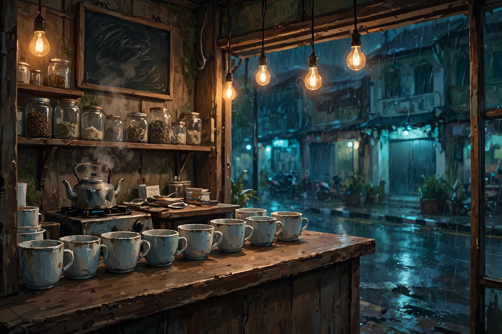

One last night at a street coffee stall in Jakarta. Five visitors. Five cups. Five endings.
Content note: this story deals with themes of grief and loss. There are no jump scares, no flashing images, and no time pressure — take as long as you like.
Endings found: 0 / 5 · An original interactive narrative · English · No account, no data collected.
The story could not be loaded. Please make sure story.js sits next to this file and try again.
Prologue
How the night is shaping you:
MemoryWarmthTruth

Memory Shelf & Journal
Keepsakes from the night. Some open extra moments in the story — a shelf that is full changes how the dawn arrives.
Memory Shelf
Journal
Ending Gallery
Five dawns wait at the end of this night. Your choices — what you brew, what you say, what you keep — decide which one arrives.
Chapter Select
Revisit any hour of the night. You return with a balanced heart and the keepsakes of earlier hours. The truest ending is earned on a full night, from the prologue to the dawn.
Settings
SoundOriginal procedural music & rain, made live in your browser. No audio files.
Text speed
ControlsEnter/Space continue · 1–3 choose · M mute · J shelf & journal · Esc close panel · mouse / tap works everywhere.
Progress
Your progress saves automatically on this device only (browser local storage). Nothing is sent anywhere. Clearing browser data erases the save and the ending gallery.
Credits & AI Disclosure
Creative direction, concept & story approval: Zul Zulfikar.
Writing, design & code: created with the assistance of Muse (Meta's AI assistant), working from the director's concept, chapter brief, characters, themes and ending structure. All story text was written for this game and reviewed as a complete work.
Artwork: all nine illustrations are original AI-generated images made for this game (street stall, character portraits, memory vignettes). Every character is fictional; no real person's likeness is used. Prompts and provenance are recorded in the game's design notes.
Music & sound: 100% original, generated live in code with the Web Audio API — a soft pentatonic melody, rain from filtered noise, and small foley sounds. No recordings, no samples, no copyrighted music.
AI tools used: Muse (writing, design and code assistance) and Muse's image generation pipeline (artwork). No other AI tools were used.
Originality: this is an original work. All characters, the stall, the street and the story are fictional and invented for this game. No third-party intellectual property, brands, franchises, logos or real likenesses appear. No personal data of any real person is used in the game.
Built for: The Chroma Awards, Season 2 — Game division, Interactive Narrative category.
Thank you for spending the night at Senja. — One more spoon of sugar for the tired ones.